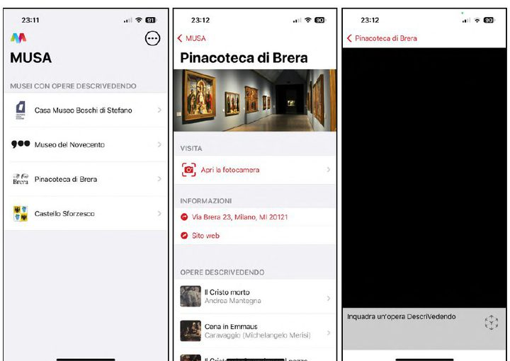
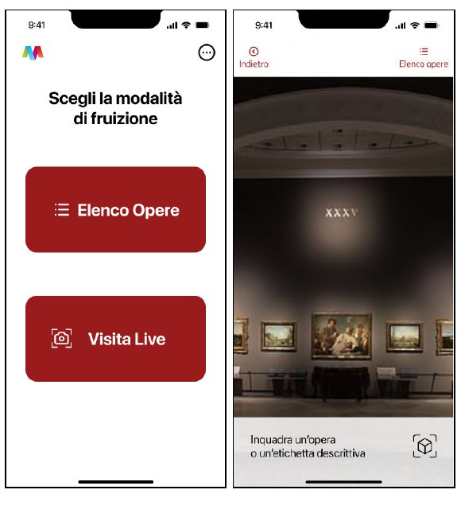
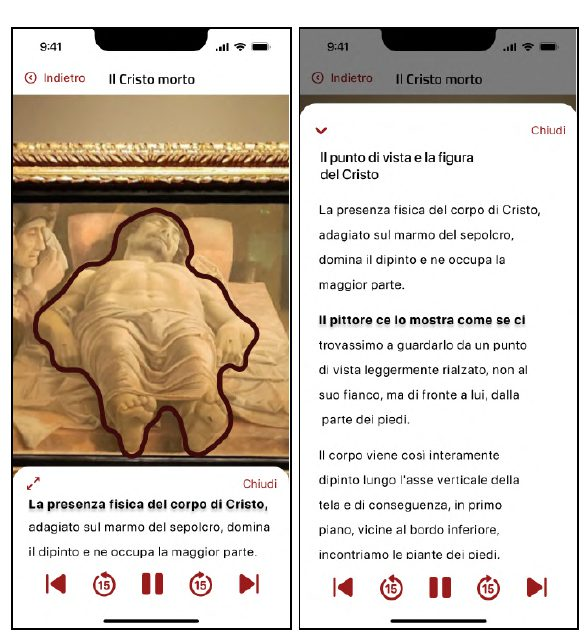
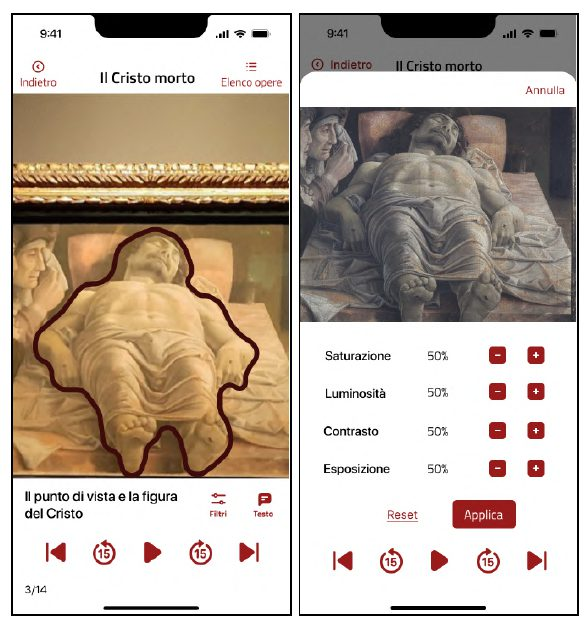
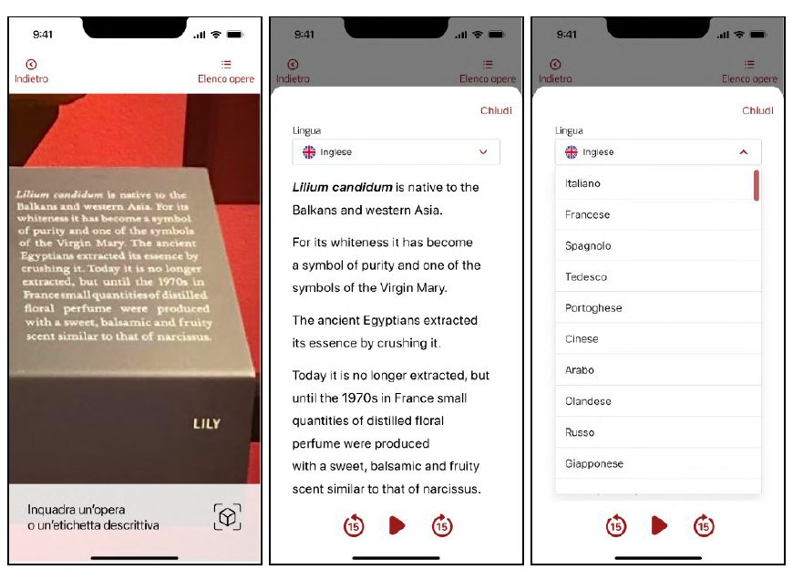
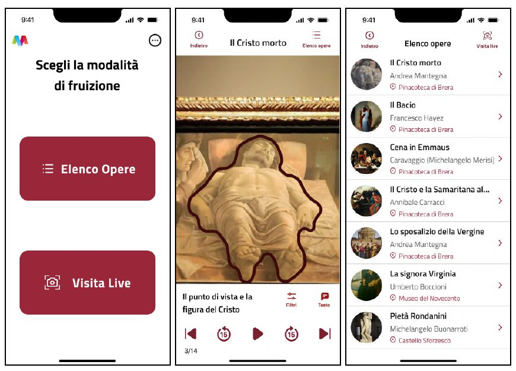

Designing an Art Experience Beyond Sight
Designing an art experience beyond sight.
How can a visual artwork be understood and experienced through touch and listening too?

In short
MusA sets out to make the experience of visual art more accessible, exploring how technology, touch and listening can work alongside sight. With Simone Oliva, I developed an experience on two levels: the redesign of the MusA app and the concept for the multisensory book Sensations to Leaf Through. Research and testing guided a second iteration of the prototype. The small sample size means the solution can't be considered definitive, but it did surface clearer, more accessible choices.
The challenge
In museums and exhibition spaces, the way artworks are communicated is still mostly visual. This approach can create exclusion for people with visual disabilities, but also for those experiencing temporary or situational conditions related to sight, attention or the context of the visit.
The research therefore looked at a broad spectrum of people and conditions. The needs that came up again and again were about autonomy, immediate understanding, an emotional connection with the content, access through different channels, and control over one's own path through the experience.
My contribution
I worked on desk and field research, an accessibility analysis of the existing app, defining problems and opportunities, ideating digital and multisensory solutions, information architecture, and wireframing and prototyping in Figma. Interviews, A/B tests and usability tests were prepared, run and analysed together with my colleague Simone, as was the subsequent iteration.
Key decisions
Reducing the steps to the experience
The path to accessing a visit through the camera contained unnecessary steps. The homepage was simplified to make the choice between the list of artworks and the live visit immediate.
Giving control to listening
Descriptions now include audio playback, 15-second forward and rewind controls, and text synchronisation. This lets each person follow the content at their own pace.
Making adjustments easier to recognise
Horizontal sliders were proving less accessible. We replaced them with increment and decrement buttons, which are clearer and better suited to use with assistive technologies.
Turning labels into adaptable content
Scanning makes it possible to simplify the text, listen to it and translate it. Static content becomes accessible through different sensory, cognitive and linguistic modes.





An experience that's physical too
The concept Sensations to Leaf Through translates the artwork into tactile shapes, textures and materials, with Braille, descriptions and audio content accessible via QR code. Combining physical and digital recognises that technology can extend access, but it doesn't replace the richness of touch.
Outcome and reflection
Testing confirmed the value of an always-available tutorial, a more direct homepage, the 15-second audio controls, the +/– buttons and explicit labels. These findings fed into a second iteration.

MusA taught me that accessibility isn't a final check, but a criterion that shapes research, architecture, interactions and content from the earliest decisions. The next step would be to extend testing to a more diverse range of people and conditions of exclusion.